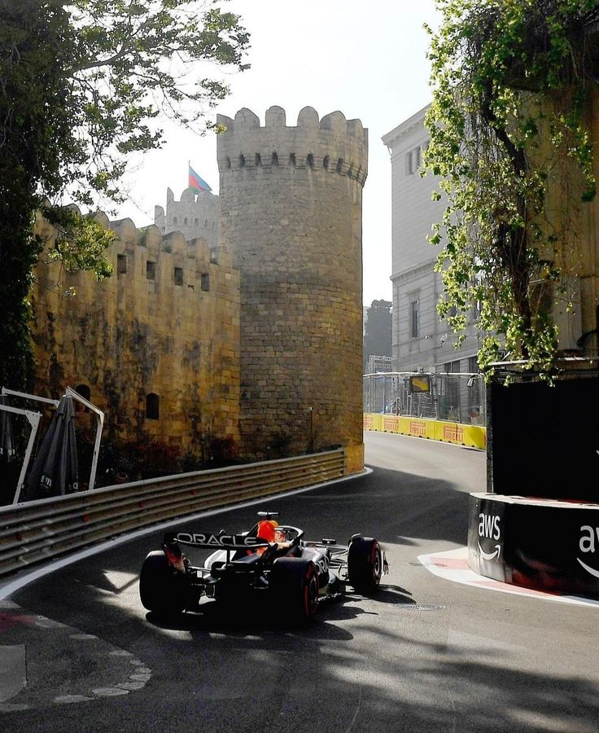

Baku City Circuit

Technical Details
Location: Baku, Azerbaijan
Length: 6.003 km
Laps: 51
First GP: 2016
Curiosities
The Baku City Circuit is one of the most unpredictable tracks in Formula 1, combining extremely fast straights with a narrow old-town section. Since its debut in 2016, it has delivered chaotic races with frequent incidents and safety cars. The contrast between high-speed and technical sections makes it highly strategic. It is famous for surprise results and dramatic finishes.